How to compile Iperf3 for Windows using Cygwin
For work I occasionally need to do bandwidth testing, which my go-to tool for is Iperf3. As I work for a company that is Windows focused I generally need to do my testing from Windows computers. Generally when need to do a test I would download Iperf Windows binaries from https://iperf.fr/iperf-download.php. Recently though, I stumbled upon an issue where when testing from a Windows client to a Linux server my test wouldn’t run.
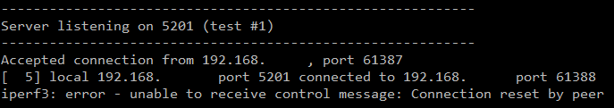
My error on the Linux server
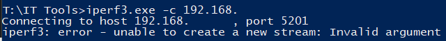
My error on the Windows client
Looking into it I noticed a large version difference, my Windows device was running version 3.1 but my Linux device was running 3.12. Going back to the download page (pictured below) I noticed the version on that site hadn’t been updated since 2016.
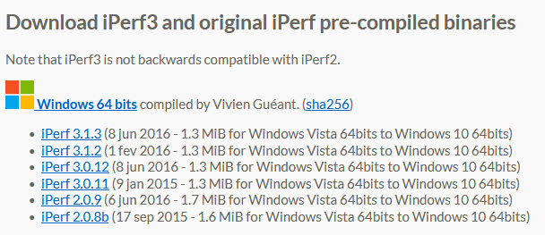
As you can see it has been at least a minute since they updated this
Inspecting the existing binaries from that site I had I could see that it was compiled using Cygwin. As the Iperf3 GitHug page clearly states that there are no dependencies for compiling this software I figured “surely I can just start compiling it myself” which after some trial and error I eventually did. In an effort to share the knowledge here is my guide so that you can too (or maybe apply this to compiling other Linux software for Windows).
Part 1: Install and configure Cygwin
After you’ve downloaded the software from the Cygwin project page it’s a fairly standard install (I assume for someone willing to take on this guide). There is a page asking which packages you wish to install, the only changes you need to make from the default is to add the wget package. We do need to get other packages but we’re going to do that “the easy way” soon.
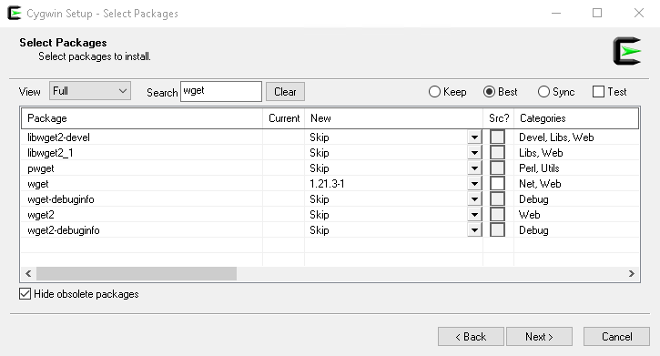
Adding wget should look a little like this, you can search for wget and then need to make sure the New column has whatever the latest version number is
With that installed you should have a shortcut in your start menu for Cygwin’s terminal. I found it worked best when I forced it to Run as Administrator so I would recommend doing that too.
As mentioned above we’re going to do package management the easy way which happens to be this project https://github.com/transcode-open/apt-cyg. The installation process is pretty straight forward:
wget https://raw.githubusercontent.com/transcode-open/apt-cyg/master/apt-cyg
install apt-cyg /bin
With that done we can use apt-cyg to download and install all the packages we want. So let’s install our development tools
apt-cyg install git nano make cmake extra-cmake-modules automake autoconf gcc-core gcc-g++ gdb binutils cygwin-devel w32api-headers w32api-runtime libguile3.0_1 libisl23 libmpc3 libgc1
Now it’s worth noting that not all of the above packages are required for compiling Iperf. It’s more of a generic development environment with a couple of specific requirements added in.
Part 2: Cloning the repo. building Iperf3 and getting the binary to work
With all of the above done correctly this part is fairly simple.
Clone the git repo from https://github.com/esnet/iperf
git clone https://github.com/esnet/iperf.git
Change directory into the repo
cd iperf
Follow the build instructions from README.md
./configure; make; make install
If your build was successful you should be able to run:
which iperf3
…and you will see something like this
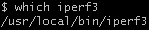
Now this doesn’t mean that our binary is immediately usable, we first need to check which libraries it links to. So run:
cygcheck iperf3
Which should give you something like
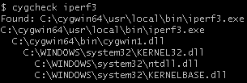
What we are on the look out for here are any DLLs which are in our Cygwin directory. Looking at the above you can see we need cygwin1.dll from the bin folder. So all we need to do is copy that DLL into the folder where the EXE was found.
Next if you open that directory in CMD you should be able to run the following successfully:
iperf3 -v
The result should look like this:
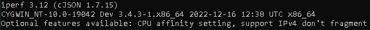
That’s it, copy that EXE and DLL together to any other Windows machines (of compatible architecture) and you should be right to go.
Part 3: Troubleshooting tips
Ok, so this all looks easy enough but when I fail to update this guide in the future then you may need to do some troubleshooting. Now here are some quick tips:
Tip 1: cygcheck is your friend
If you are having issues getting an application that you downloaded using apt-cyg to run start by using cygcheck to detect what dependencies are missing. As an example I was having issues with make so I ran:
cygcheck make
And would you look at that we’re missing a dependency:
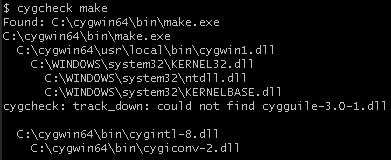
We need to find cygguile-3.0-1.dll
If you feel so inclined you can do this the GCC way and use ldd instead
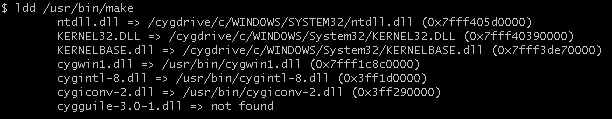
Oooh, look at that… It’s the same thing but with slightly less cygwin-aware information
Tip 2: apt-cyg has a pretty useful search function
Continuing our above example, let’s say you need to find cygguile-3.0-1.dll how would you do that? Try the following seach
apt-cyg searchall cygguile-3.0-1
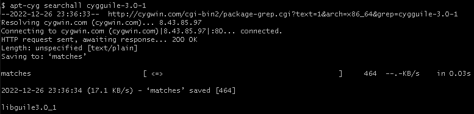
And if you look at that it lists a package named libguile3.0_1 which you may recognise as one of the packages we installed at the end of Part 1.
Tip 3: simple hello app for testing that we can compile
If you wanna test that you can compile C apps, here is a quick “hello” app written in C which for the sake of this tip will be named: hello.c
#include <stdio.h>
int main()
{
printf("Hello from C\n");
return 0;
}
To compile it run:
gcc hello.c -o hello.exe
…then if you get no errors and hello.exe exists you should be able to run:
./hello.exe
…which should look like this:
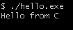
Right, but what should a problem look like? Well as an example I ran into the following issue:
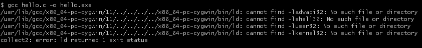
These errors are basically saying that we’re missing the advapi32, shell32, user32 and kernel32 libraries for linking. To resolve this we can go back to tip 2, so pick a library and do a search
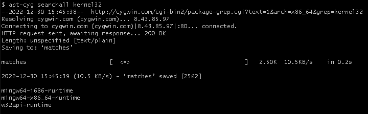
Interestingly this search came up with 3 packages. A little bit of trial and error later I discovered w32api-runtime was the package to install which you may recognise as one of the packages we installed at the end of Part 1.
If seems like it requires a little too much effort?
No problem, this isn’t for everyone. If you like instead you can go to my GitHub repo https://github.com/nathancrjackson/iperf3-windows-builds and download pre-compiled versions built by me.